Что умеют разделы «Заявки», «Снабжение» и «Производство», кто за что отвечает и что происходит с товаром, деньгами и документами на каждом шаге — с примерами и расчётами.
Снабжение и производство в OneBase — одна цепочка. Любая закупка начинается с заявки, а склад один для всех: что купили, то лежит на складе и выдаётся в отдел или в производство. Каждый шаг оставляет документ с номером и запись в истории.
Три правила держат всю систему:
| Кто | Что делает | Где |
|---|---|---|
| Любой сотрудник | Создаёт обычные заявки на закупку для своего отдела, получает товар со склада. | Заявки |
| Руководитель отдела | Первым согласует заявки сотрудников отдела, видит заявки отдела. | Заявки → Согласования, Заявки отдела |
| Финансист (выбран в настройках) | Согласует обычные заявки после руководителя, может уточнить цену; по умолчанию — шаг маршрута сырья. Может сам создавать заявки на сырьё. | Заявки → Согласования |
| Директор (выбран в настройках) | Утверждает заявки сверх лимита (по умолчанию 5 млн сум), видит обзор и отчёты. | Заявки → Согласования, Снабжение → Обзор |
| Аналитик (роль «Аналитик») | Создаёт заявки на сырьё, согласует заявки на сырьё снабженцев и финансиста. | Заявки |
| Снабженец (роль «Снабжение») | Покупает по согласованным заявкам («Куплено»), ведёт тендеры, поставщиков и предложения, создаёт заявки на сырьё, смотрит отчёты. | Снабжение → К закупке, Тендеры, Поставщики |
| Руководитель снабжения | То же, что снабженец, плюс свой обзор, ежедневная сводка, эскалации просроченных задач. | Снабжение → Обзор |
| Кладовщик | Каталог, приход, выдача, списание, инвентаризация, перемещения, приём поставок по тендеру, выдача и возврат по заданиям, приход выхода производства. Закреплённый за складами — только по ним. | Снабжение → Склад, К выдаче; Производство → Задания |
| Лаборатория | Проверяет документы и показатели партий сырья, списывает пробы, ведёт спецификации. | Производство → Качество |
| Назначенный по качеству | Допускает, бракует, блокирует партии. | Производство → Качество |
| Технолог | Техкарты продуктов и их версии; утверждает чужие версии. | Производство → Технолог |
| Начальник производства | Утверждает техкарты и смены, получает уведомления о перерасходе. | Производство |
| Мастер (роль «Производство») | Задания на выпуск: создать, выпустить, закрыть; утверждает смены. | Производство → Задания, Смены |
| Оператор производства | Сменный отчёт: замесы, выпечка, брак, упаковка, взвешивание. | Производство → Смены |
| Администратор | Пользователи и роли, склады, подключения. В закупках и качестве не решает. | Настройки |
«Снабжение» и «Производство» открываются из «Отделов» (карточки отделов). «Заявки» — отдельный пункт бокового меню. Вкладки видны по правам: кладовщик не видит «Отчёты» снабжения, сотрудник видит только «Заявки».
| Раздел | Вкладки |
|---|---|
| Заявки | Обзор · Все заявки (снабжению и директору) · Мои заявки · Заявки отдела (руководителям) · Согласования (тем, кто согласует) · Настройки (категории) |
| Снабжение | Обзор · К закупке · Тендеры · Поставщики · Склад · Партии · К выдаче · Движения · Отчёты. Ежедневные сводки — из «Обзора». Вкладки, которые не помещаются, уходят в «Ещё». |
| Производство | Обзор · Задания · Технолог (панель и техкарты) · Смены · Качество · Отчёты |
| Настройки | Отделы → Снабжение: руководители, маршруты согласования, лимит, правила, склады, кто решает по качеству |
Где: «Заявки → Новая заявка» или кнопка «Новая заявка» в обзоре снабжения. Кто: любой сотрудник — обычную заявку; снабженец, аналитик и финансист — ещё и заявку на сырьё.
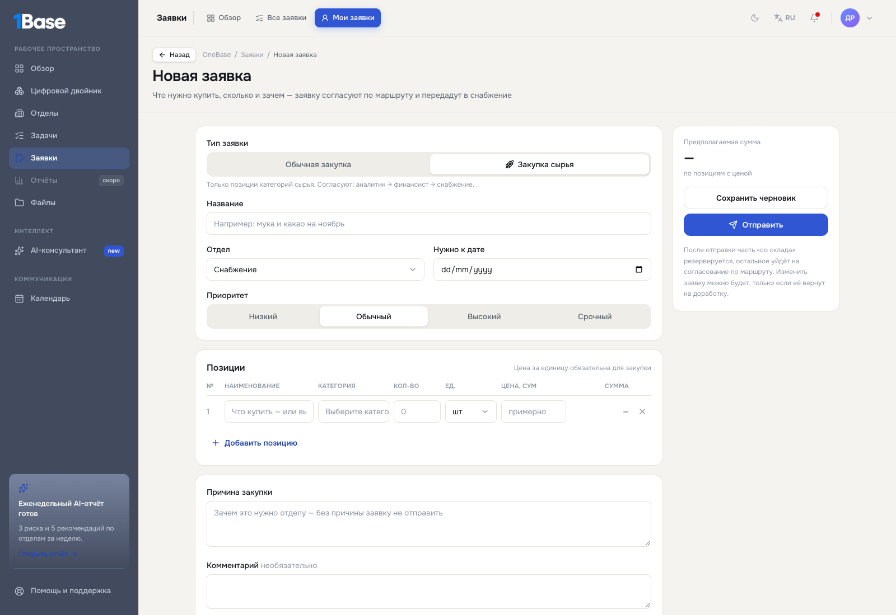
Если товар есть на складе, система предлагает взять его оттуда, а купить только недостающее. Часть «со склада» при отправке резервируется под заявку: другой сотрудник её уже не получит. Если на складе есть, а вы всё равно просите купить, нужно обоснование.
| Позиция | Нужно | Со склада | К закупке | Цена | К закупке, сум |
|---|---|---|---|---|---|
| Подшипник 6205-2RS | 10 шт | 4 | 6 | 85 000 | 510 000 |
| Ремень приводной SPA-1250 | 2 шт | — | 2 | 420 000 | 840 000 |
| Итого к закупке | 1 350 000 | ||||
На складе было 4 подшипника — они зарезервированы под заявку при отправке. Покупать нужно 6 подшипников и 2 ремня.
Черновик → на согласовании (у руководителя, аналитика, финансиста или директора) → утверждена (передана в снабжение) → частично выполнена (что-то уже выдано или куплено) → выполнена (всё выдано). Ещё бывают: требуется доработка (вернули с комментарием — исправьте и отправьте снова), отклонена, отменена (автор может отменить до утверждения). У каждой позиции свой статус: зарезервирована, к закупке, заказана, поступила на склад, выдана частично, выдана.
Заявку можно скачать документом Word («Скачать (Word)»): реквизиты, позиции, решения согласующих и строки для подписей.
Где: «Заявки → Согласования» — заявки, которые ждут именно вашего решения (счётчик на вкладке). Директор может согласовать и прямо из обзора снабжения. В карточке заявки — кнопки «Согласовать» (у директора — «Утвердить»), «Вернуть на доработку» и «Отклонить»; возврат и отказ — только с комментарием.
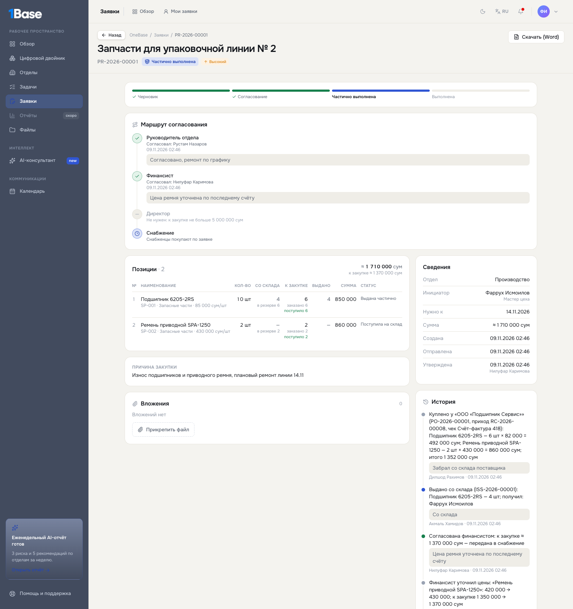
Мастер Фаррух Исмоилов отправил заявку. Руководитель производства Рустам Назаров согласовал: «Согласовано, ремонт по графику». Финансист Нилуфар Каримова уточнила цену ремня по последнему счёту: 420 000 → 430 000. К закупке стало 6 × 85 000 + 2 × 430 000 = 1 370 000 сум — меньше лимита 5 000 000, поэтому шаг директора отмечен «Не нужен» и заявка ушла в снабжение.
Отдел маркетинга просит 3 ноутбука по 9 800 000 сум: 3 × 9 800 000 = 29 400 000 сум больше лимита. Руководитель маркетинга и финансист согласовали, теперь заявка ждёт директора Бахтиёра Алимова — она у него в «Согласованиях» и в обзоре снабжения.
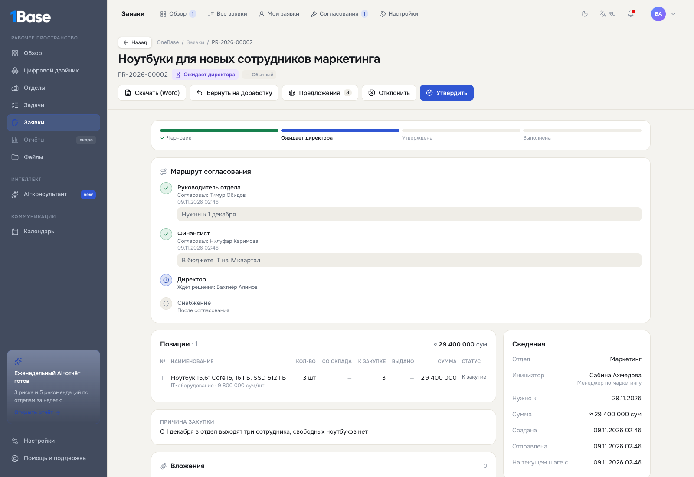
| Кто создал заявку | Кто согласует (по умолчанию) |
|---|---|
| Снабженец | аналитик → финансист |
| Аналитик | финансист |
| Финансист | аналитик |
Шаги меняются в «Настройки → Отделы → Снабжение → Маршрут закупки сырья»: аналитик, финансист, директор, «директор, если сумма больше лимита». Свою заявку никто не согласует: шаг аналитика по заявке аналитика решает другой аналитик. Если решать некому, заявка ждёт, а тем, кто настраивает снабжение, приходит предупреждение. Новый маршрут действует для заявок, отправленных после сохранения.
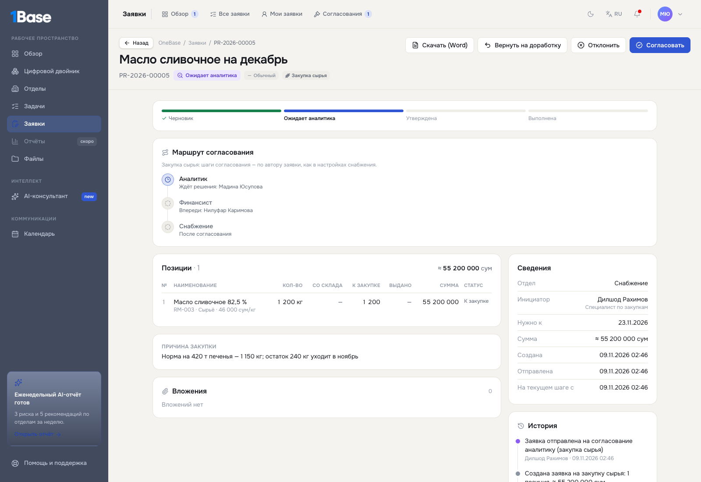
Снабжение может уточнить утверждённую заявку. Если изменение существенное — добавлена или убрана позиция, сменился товар, выросло количество к закупке, цена или сумма выросли больше допуска (в настройках, например 5 %) — заявка снова идёт на согласование: обычная — с финансиста, на сырьё — с первого шага своего маршрута. Уменьшение только пишется в историю.
Где: кнопка «Предложения» в карточке отправленной заявки. Кто: снабжение. По каждой позиции «к закупке» вносится цена поставщика, НДС (в цене или сверху), доставка, срок, условия оплаты, гарантия, оценка качества 1–5 и срок действия; к предложению прикрепляется файл КП или счёт.
Таблица сравнения сама отмечает лучший итог (среди предложений, покрывающих все позиции, с НДС и доставкой), лучшую цену по позиции и «быстрее всех». Неполные и истёкшие предложения подписаны, отклонённые в сравнении не участвуют. Рядом — рейтинг поставщика и его прошлые просрочки.
| Поставщик | Цена за шт. | НДС | Доставка | Итог | Срок |
|---|---|---|---|---|---|
| ООО «Техно Маркет» | 9 650 000 | 12 % в цене | 0 | 28 950 000 | 5 дн. |
| ООО «Компьютер Сити» | 8 400 000 | 12 % сверху | 150 000 | 28 374 000 | 10 дн. |
| ИП «Офис Лайн» | 9 900 000 | без НДС | 0 | 29 700 000 | 3 дн. |
«Компьютер Сити»: 8 400 000 × 1,12 = 9 408 000 с НДС; × 3 = 28 224 000; + доставка 150 000 = 28 374 000 — лучший итог. Против цены заявки (29 400 000) экономия 1 026 000 сум. «Офис Лайн» привезёт быстрее всех, но дороже.
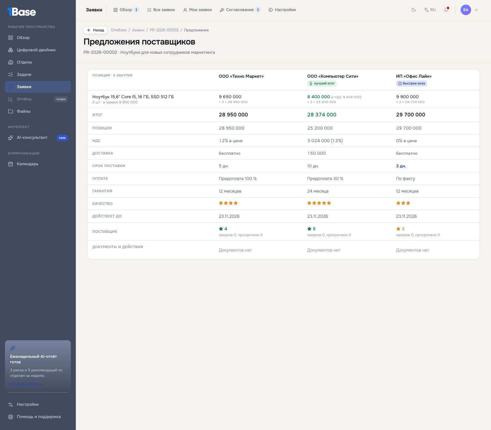
Где: «Снабжение → К закупке». Здесь все утверждённые заявки, по которым осталось что-то купить: сначала срочные, потом по дате «нужно к». Просроченные (дата прошла) отмечены.
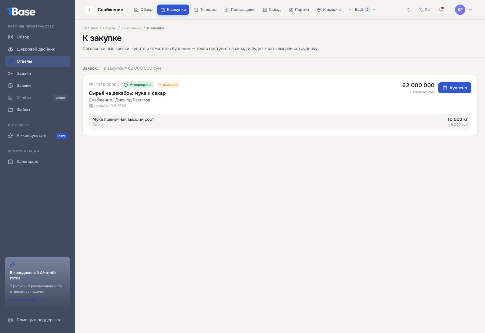
Снабженец покупает и нажимает «Куплено»: сколько и почём купили, где (поставщик из справочника или новое название — поставщик добавится сам), номер чека или накладной. Для сырья, которое ведётся по партиям, — номер партии, даты производства и годности. Можно купить часть — остальное останется «к закупке».
Одно нажатие делает сразу всё:
Если товара нет в каталоге, на складе заведут карточку с тем же названием и единицей. Купили дороже согласованного (сверх допуска) — покупка пройдёт, а финансист получит уведомление. Сырьё с контролем качества встаёт «на контроль» и резервируется под заявку только после допуска.
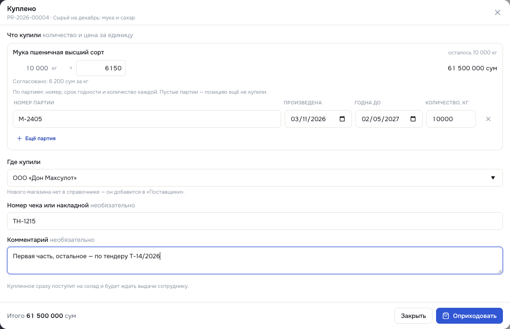
Снабженец Дилшод Рахимов купил у ООО «Подшипник Сервис»: подшипники 6 × 82 000 = 492 000, ремни 2 × 430 000 = 860 000, итого 1 352 000 сум (счёт-фактура 418). Система создала покупку PO-2026-00001 и приход RC-2026-00008, товар зарезервирован под заявку и ждёт в «К выдаче». Подшипники вышли на 3 000 сум дешевле заявки — это экономия 18 000 сум в показателях.
Где: «Снабжение → Тендеры» — журнал тендерных закупок сырья и материалов. Кто: записи ведёт снабжение, поставку на склад принимает кладовщик, смотрит и директор.
В записи: предмет, номер и дата тендера, победитель, категория, договор, число участников, срок поставки, позиции с ценами, документы (протокол, договор). Тендер связывают с утверждённой заявкой («Исполняет заявку») и выбирают склад поставки. Позицию тендера связывают с карточкой склада — тогда её можно принять на склад, в том числе в единице закупки («1 упак = 50 кг»).
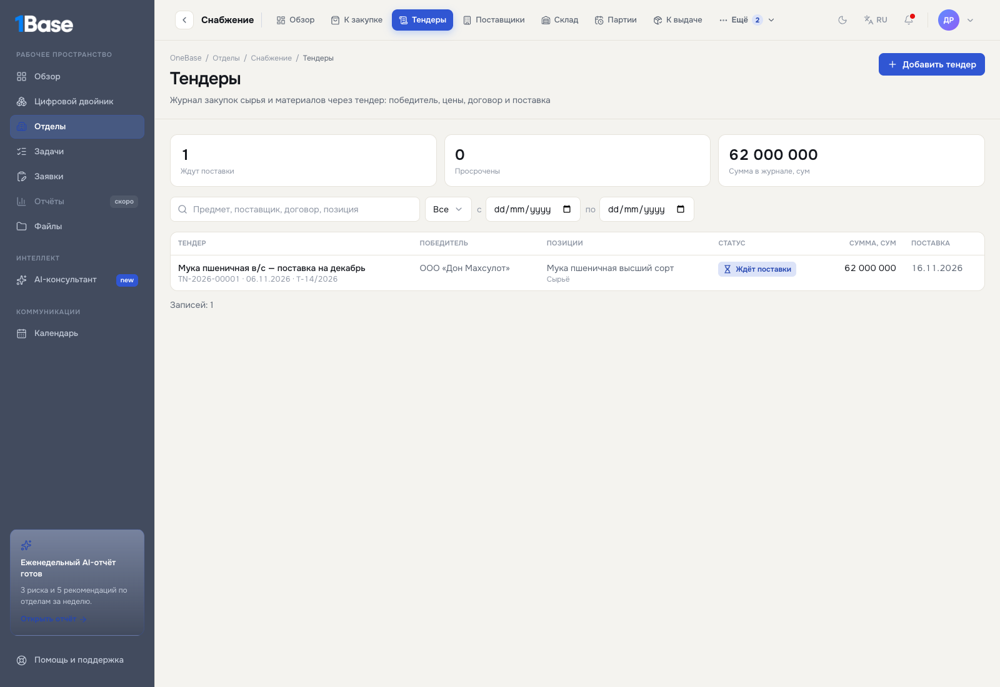
Когда приходит машина, кладовщик открывает тендер и нажимает «Принять на склад»: сколько пришло, номер накладной и партии со сроком годности. Больше, чем осталось по тендеру, не принять. Сырьё с контролем качества сразу встаёт на контроль. Поставлено всё — тендер «Поставлено». Каждое изменение записи пишется в историю (было → стало); ошибочный тендер отменяют с причиной, а не удаляют.
Тендер Т-14/2026 от 06.11.2026, 3 участника, победитель ООО «Дон Махсулот», договор Д-2026/118: 200 упак × 310 000 = 62 000 000 сум. 1 упак = 50 кг, значит 10 000 кг по 6 200 сум за кг — ровно цена заявки PR-2026-00004. Первая машина: 120 упак двумя партиями М-2311 и М-2312 по 60 упак. На склад встало 6 000 кг (приход RC-2026-00009), обе партии — на контроле качества. По тендеру осталось 80 упак.
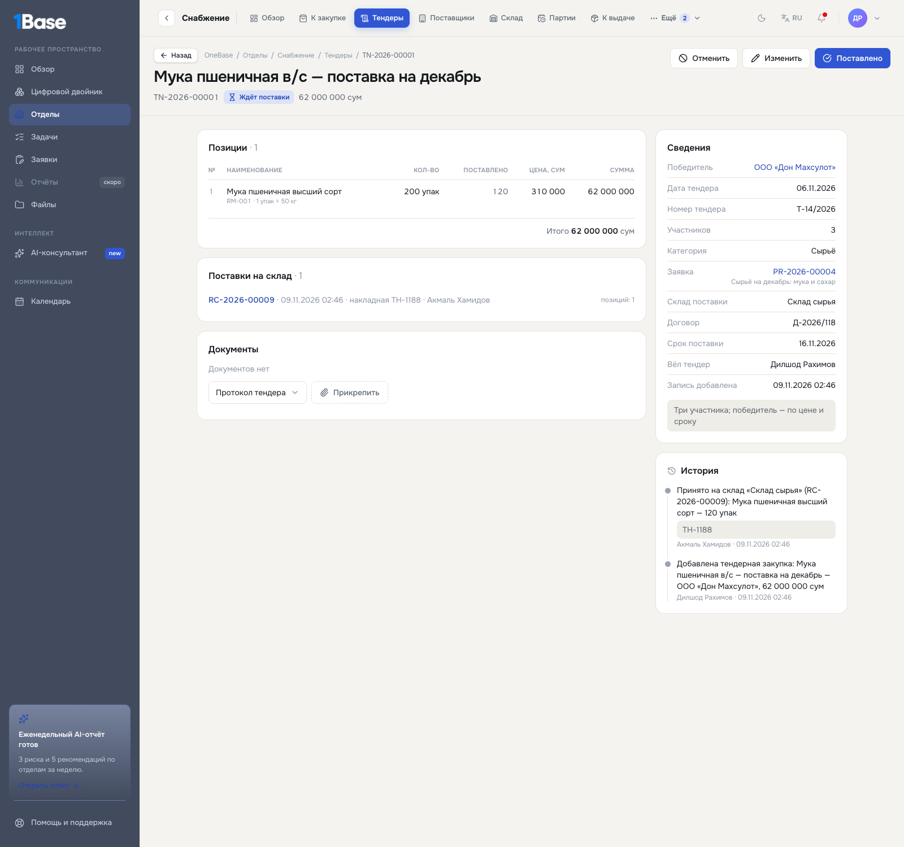
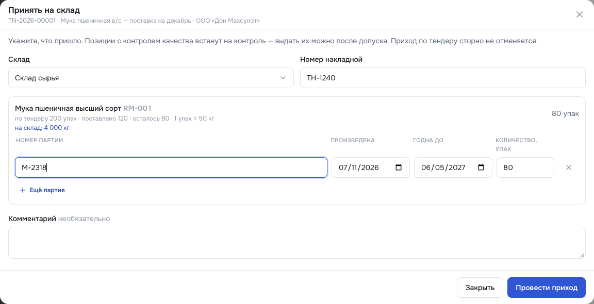
Где: «Снабжение → К выдаче». Кто: кладовщик. Здесь товар, который лежит на складе под заявки: часть «со склада» и купленное снабжением. Кнопка «Выдать» — сколько и кому; можно частями. Когда выдано всё, заявка становится «Выполнена».
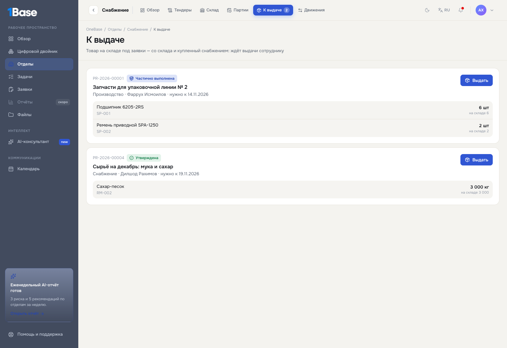
Где: «Снабжение → Склад». Остатки по одному складу или по всем, резерв заявок, доступное количество и минимум.
| Операция | Что делает | Документ |
|---|---|---|
| Приход | Без заказа: позиции, цена, накладная, поставщик; для сырья — партии со сроком. Можно в единице закупки. | RC- |
| Выдача | Отделу без заявки: отдел и кто получил. Только годное, резерв заявок не трогается. | ISS- |
| Выдача по заявке | Из «К выдаче», частями; закрывает заявку. | ISS- |
| Списание | С причиной (брак, порча, утилизация). Без выбора партии — сначала просроченные. | WO- |
| Инвентаризация | Ввод фактического остатка; разница проводится корректировкой. Для сырья — по партиям. | INV- |
| Перемещение | Между складами, только свободный остаток; партия переезжает со своим номером и сроком. | TRF- |
| Ввод партий | Разложить имеющийся остаток по партиям — дальше позиция ведётся по партиям. | BE- |
| Возврат поставщику | Только забракованная или заблокированная партия, с причиной. | SRT- |
| Сторно | Отмена ошибочного документа зеркальными движениями, с причиной. Документ остаётся в журнале. | STN- |
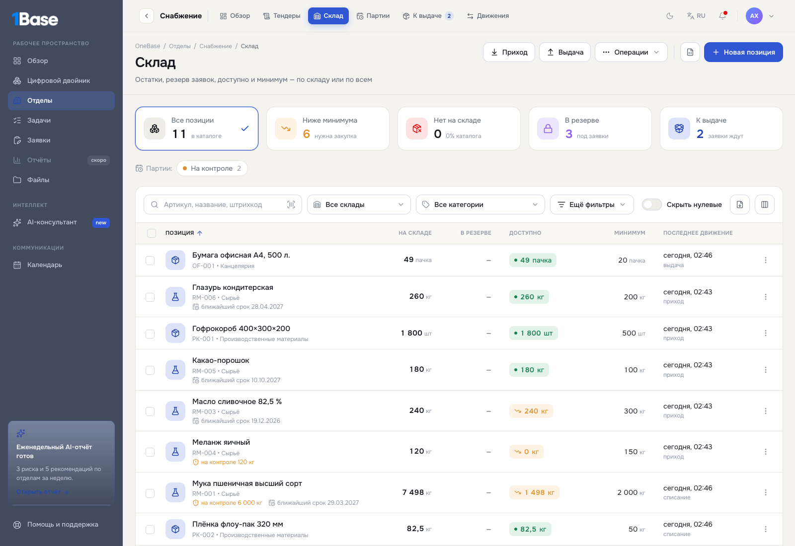
Каталог. «Новая позиция»: артикул, название, категория, единица, штрихкод, минимум; для сырья — «вести по партиям», срок хранения, условия хранения, контроль качества (нет, документы, документы и лаборатория), единицы закупки. «Загрузить каталог» — сразу много позиций из Excel с проверкой без сохранения. Позиции не удаляются, а отключаются.
Несколько складов. Центральный склад — склад по умолчанию: на нём резервируют заявки и приходуют покупки. Можно добавить склад сырья и кладовые цехов, закрепить кладовщиков: закреплённый проводит операции только по своим складам, смотреть может все.
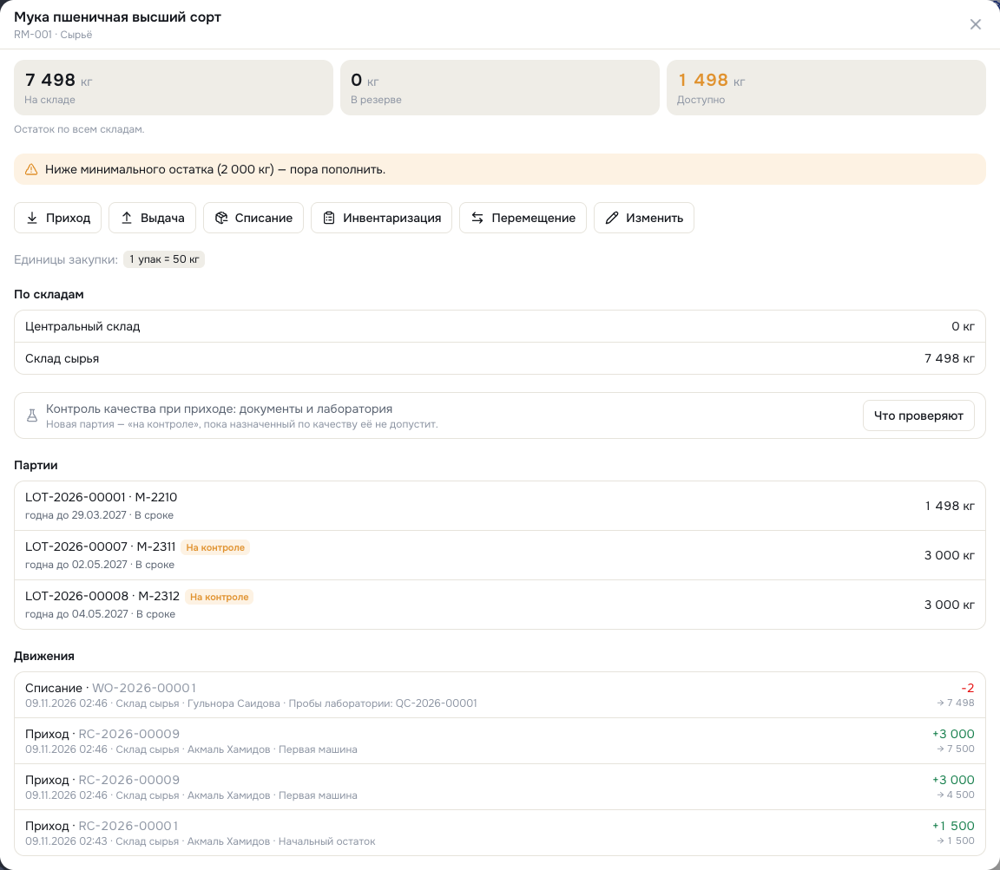
Начальный остаток 1 500 кг − проба лаборатории 2 кг + поставка по тендеру 6 000 кг = 7 498 кг на складе. Новые партии М-2311 и М-2312 (6 000 кг) ещё на контроле качества — выдать их нельзя. Доступно 7 498 − 6 000 = 1 498 кг. Минимум 2 000 кг, поэтому позиция подсвечена «ниже минимального остатка» — пора пополнять (или ускорить проверку).
Пока часть склада ведётся в таблице, «Движения → Импорт из Excel» или «Google-таблица» загружают журнал: столбцы узнаются сами (по-русски и по-узбекски), первая загрузка заводит начальные остатки, следующие проводят только новые строки. Перед загрузкой — проверка без сохранения. Чтобы одну выдачу не провели дважды, у склада выбирают, кто ведёт данные: «таблица» (ручные операции закрыты) или «OneBase» (загрузка закрыта).
Где: «Снабжение → Партии». У позиции «по партиям» каждая поставка — отдельная партия со своим номером LOT-…, номером партии производителя, поставщиком, датами производства и годности, ценой прихода и остатком по складам.
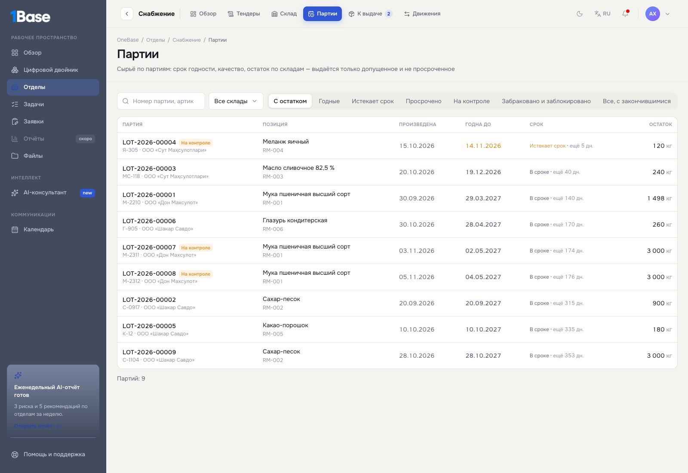
Где: «Производство → Качество». Кто: лаборатория проверяет, решает назначенный по качеству (в настройках снабжения). Новая партия позиции с контролем качества встаёт «на контроль» при любом приходе: «Куплено», тендер, приход на складе, загрузка журнала. Пока решения нет, партия лежит на складе, но не выдаётся и не резервируется.
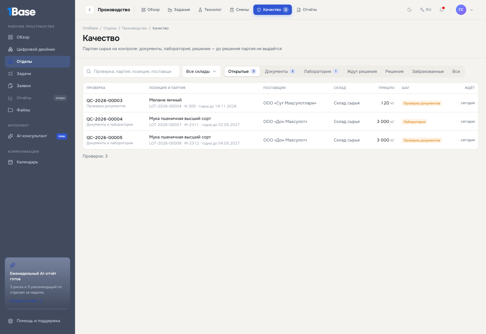
Спецификация материала (кнопка «Что проверяют» в карточке позиции): какие документы нужны при приходе и какие показатели проверяет лаборатория — с нормой «от / до» или ожидаемым значением, методом.
| Показатель | Норма | Факт | Итог |
|---|---|---|---|
| Сертификат качества, декларация соответствия | есть | есть | в порядке |
| Влажность | не больше 15 % | 14,2 % | соответствует |
| Клейковина сырая | не меньше 28 % | 29,5 % | соответствует |
| Посторонние примеси | не обнаружены | не обнаружены | соответствует |
Проба 2 кг списана документом WO-2026-00001. Лаборант Гульнора Саидова допустила партию: «Соответствует спецификации». С этой минуты 1 498 кг муки можно выдавать в производство.
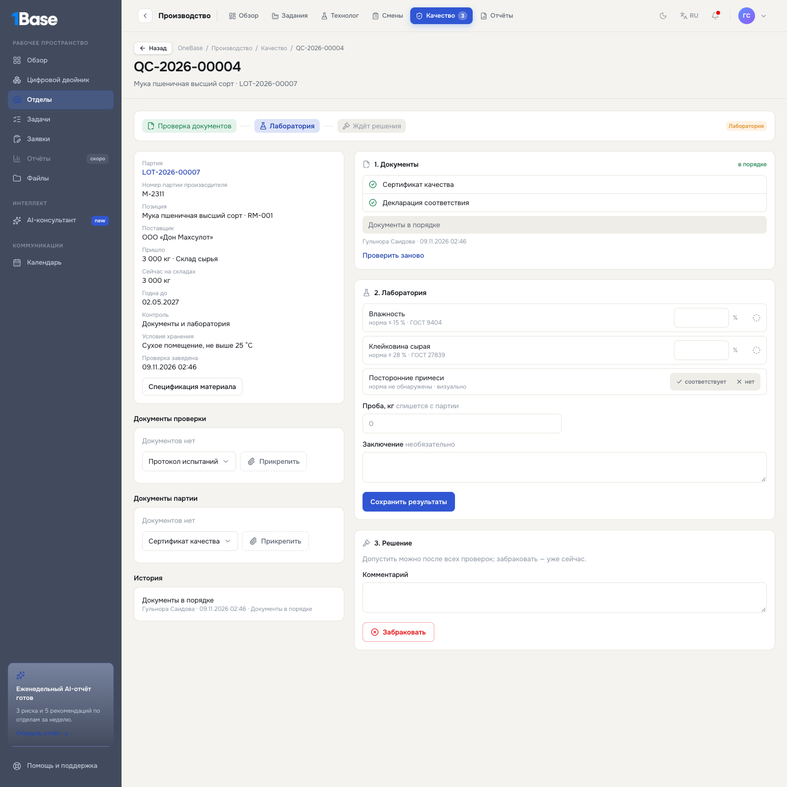
Брак. Забракованную партию возвращают поставщику (документ SRT-) или списывают. Брак попадает в рейтинг поставщика, а если сырьё покупали «Куплено» по заявке — количество снова становится «к закупке», снабжение получает уведомление.
Где: «Снабжение → Движения». Каждое движение — вид, количество со знаком, остаток до и после, документ, склад, партия, кто провёл, отдел, ссылки на заявку, покупку или тендер. Журнал не правится: ошибку исправляет сторно или новый документ. Фильтры — склад, вид движения, период, поиск.
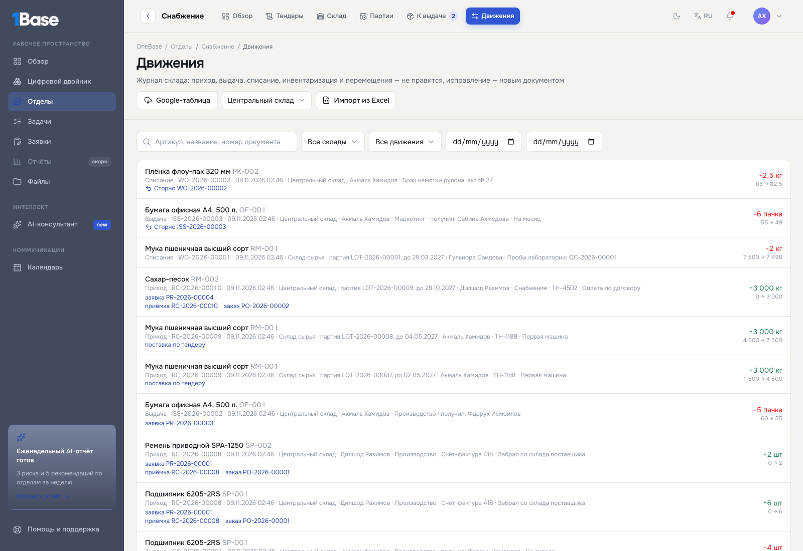
Где: «Снабжение → Поставщики». Реестр с поиском по названию, фирме, ИНН, телефону; фильтр по категориям; сортировка по рейтингу, сумме и просрочкам. ИНН не повторяется; поставщик не удаляется, а отключается. «Импорт» загружает реестр из Excel или CSV: заголовки по-русски и по-узбекски, повторы с тем же ИНН объединяются, перед загрузкой — проверка файла.
Рейтинг 0–100 (в списке — «из 5») складывается только из данных системы:
| Составляющая | Как считается |
|---|---|
| Сроки | доля поставок не позже обещанной даты |
| Качество | оценки снабжения в предложениях |
| Соблюдение цен | цена покупки против цены в предложении |
| Без претензий | доля приёмок без брака и недостачи; забракованные партии — тоже претензия |
| Полнота поставок | сколько из заказанного поставлено |
Пока данных нет, так и написано: «нет данных», «срок ещё не наступал» — выдуманных оценок нет.
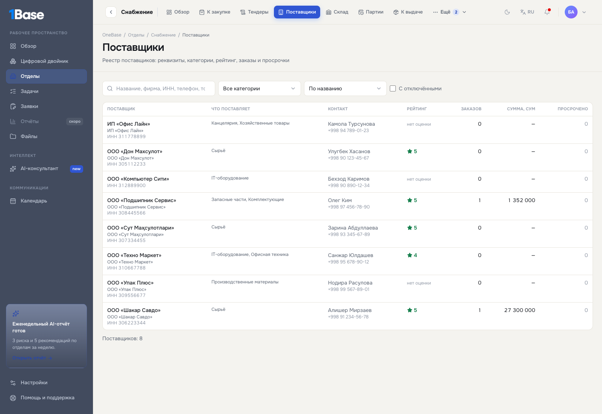
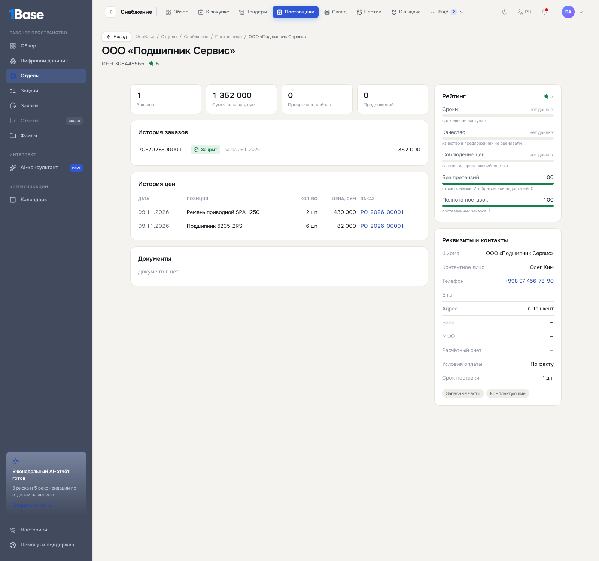
Где: «Снабжение → Обзор». Период — «этот месяц», «прошлый», «3 месяца», «год» или свои даты. Каждый видит свои блоки: директор, руководитель снабжения, снабженец, кладовщик.
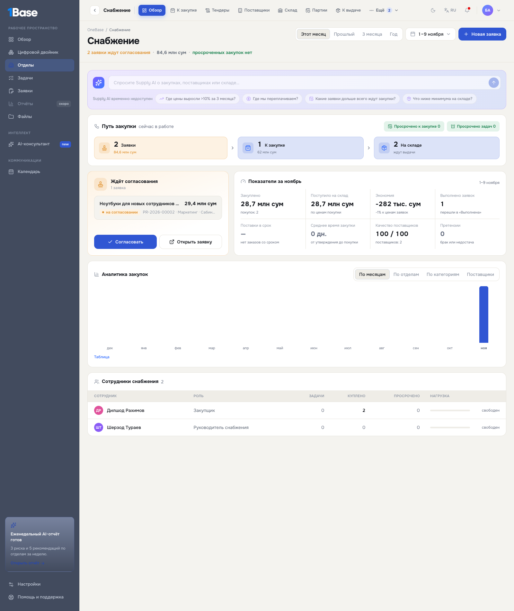
| Показатель | Как считается |
|---|---|
| Закуплено | сумма покупок и заказов за период |
| Поступило на склад | приходы по покупкам по ценам покупки |
| Экономия | (цена в заявке − цена покупки с НДС) × количество; минус — перерасход |
| Выполнено заявок | перешли в «Выполнена» за период |
| Поставки в срок | доля поставок не позже обещанной даты |
| Среднее время закупки | от утверждения заявки до покупки |
| Качество поставщиков | средний рейтинг поставщиков с закупками за период |
| Претензии | приёмки с браком или недостачей |
Подшипники: (85 000 − 82 000) × 6 = +18 000. Ремни: (430 000 − 430 000) × 2 = 0. Сахар: (9 000 − 9 100) × 3 000 = −300 000. Итого 18 000 − 300 000 = −282 000 сум: сахар купили на 100 сум за кг дороже заявки, и это перекрыло выгоду на подшипниках. «Закуплено 28,7 млн» = 1 352 000 + 27 300 000.
Поле вопроса вверху обзора открывает AI-консультанта снабжения. Он только читает данные с правами того, кто спрашивает, и ничего не утверждает и не меняет. Что можно спросить: где выросли цены и где переплачиваем, какие заявки дольше всего ждут, что ниже минимума и есть ли на это заявка, какие поставки просрочены, кто из поставщиков слабее и почему, какие потребности можно объединить в одну закупку, как работают сотрудники снабжения. Отвечает, когда в OneBase подключена AI-модель; на учебном стенде на снимке он выключен.
Где: «Снабжение → Отчёты». Фильтры — период, отделы, категории, сотрудники, поставщики. Предпросмотр на экране, файл — Excel или PDF на языке интерфейса.
| Отчёт | Что внутри |
|---|---|
| Показатели закупок | средний срок, поставки в срок, экономия, выполненные заявки, претензии, качество поставщиков — с пояснением расчёта |
| Расходы | листы по отделам, категориям, поставщикам, месяцам |
| Позиции закупок | каждая купленная позиция: заявка, отдел, категория, цена с НДС, цена в заявке, экономия |
| Заказы поставщикам | статусы, даты, просрочки, суммы |
| Заявки | отдел, инициатор, статус, приоритет, суммы |
| Приёмки и претензии | пришло, брак, недостача, принято, претензия и решение |
| Поставщики | закупки за период и рейтинг по составляющим |
| Сотрудники снабжения | нагрузка, просрочки, поставки, сроки |
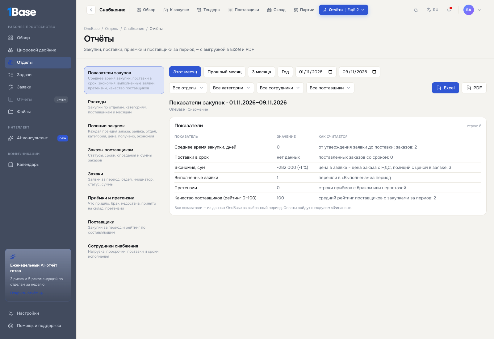
Отчёты по сырью — партии и сроки, контроль качества, расход и норма, движения по партиям, сверка позиций и партий — в «Производство → Отчёты» (раздел 26).
Где: «Настройки → Отделы → Снабжение». Кто: директор и администратор.
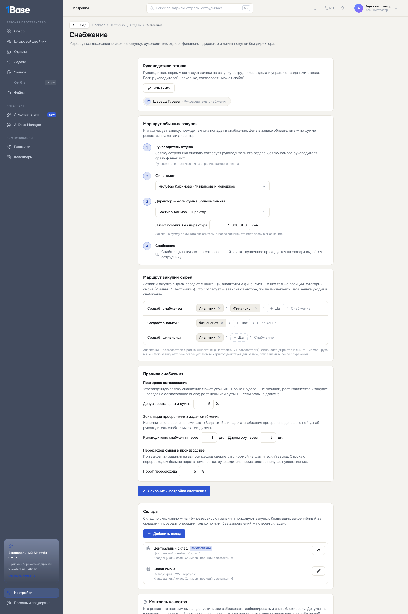
Прежний путь. Заказы поставщикам с согласованием директором и приёмка по заказу (брак, недостача, претензии) остались в системе для старых заказов, но в меню их нет: сейчас закупка идёт через «Куплено» и тендеры.
На снимках этой части — учебный выпуск начинки шоколадной и печенья глазированного с начинкой.
Где: «Производство → Обзор». Кто видит: производство, технолог, кладовщик, лаборатория, снабжение, директор.
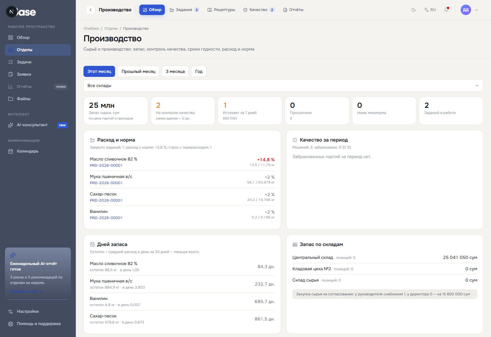
Где: «Производство → Технолог → Техкарты». Кто: технолог создаёт, другой технолог или начальник производства утверждает.

Замес 280 кг: мука 150, сахар 60, масло 40, меланж 30 → выпечка (выход 87,5 %) → начинка 200 кг → глазурь 100 кг и орехи 50 кг → упаковка по 0,25 кг: этикетка на упаковку (+0,5 % потерь), плёнка 4 г на упаковку (+2 %), коробка на 20 упаковок.
На 1 кг готового печенья идёт 0,65 кг выпеченной основы, а теста — 0,65 ÷ 0,875 = 0,742857 кг. «Расчёт на выпуск» в карточке показывает на любое количество, сколько замесов, сырья и упаковки нужно и хватает ли годного на складе.
Где: «Производство → Задания → Новое задание». Кто: мастер или начальник производства.
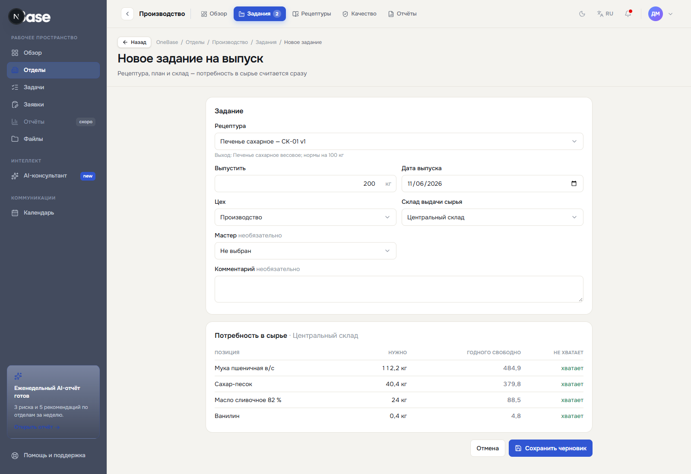

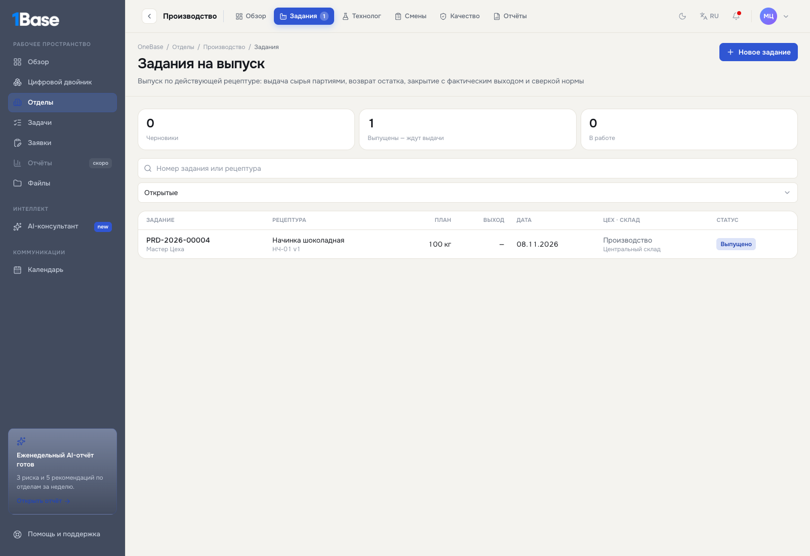
| Что | Расчёт | Нужно |
|---|---|---|
| Выпечь | 5 000 ÷ 0,98 | 5 102,041 кг |
| Тесто | 5 102,041 × 0,742857 | 3 790,087 кг |
| Замесы по 280 кг | частичный не разрешён | 14 |
| Мука / сахар / масло / меланж | 14 × 150 / 60 / 40 / 30 | 2 100 / 840 / 560 / 420 кг |
| Начинка / глазурь / орехи | на 5 000 кг | 1 000 / 500 / 250 кг |
| Упаковки | 5 000 ÷ 0,25 | 20 000 |
| Этикетки | 20 000 + 0,5 % | 20 100 шт |
| Плёнка | 20 000 × 4 г = 80 кг + 2 % | 81,6 кг |
| Коробки | 20 000 ÷ 20 | 1 000 шт |
Кто: кладовщик склада задания. Где: карточка задания.

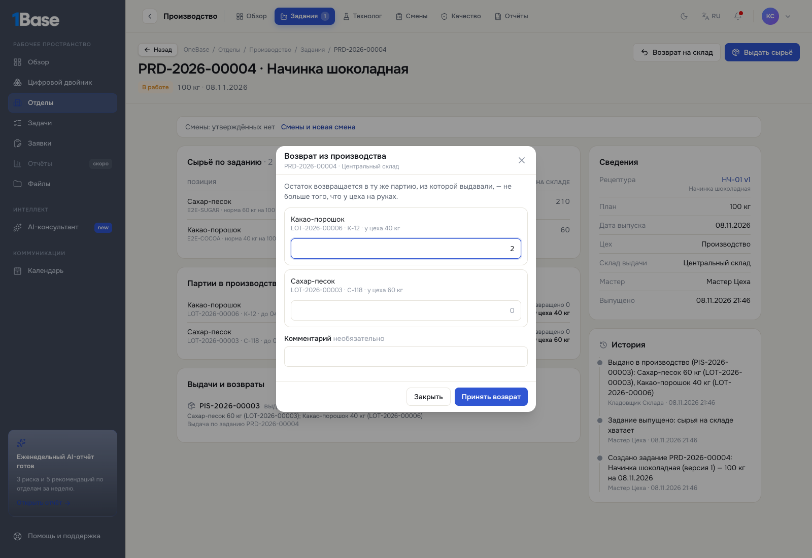
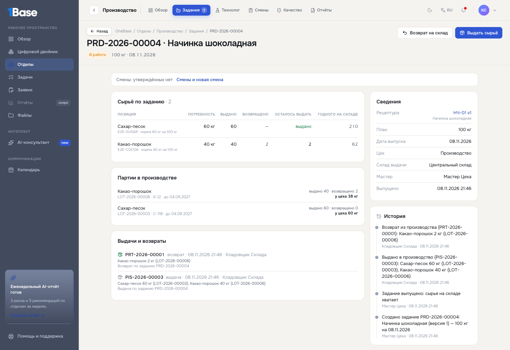
Кто: оператор производства или мастер. Где: «Производство → Смены → Новая смена» или «Смены» в задании.
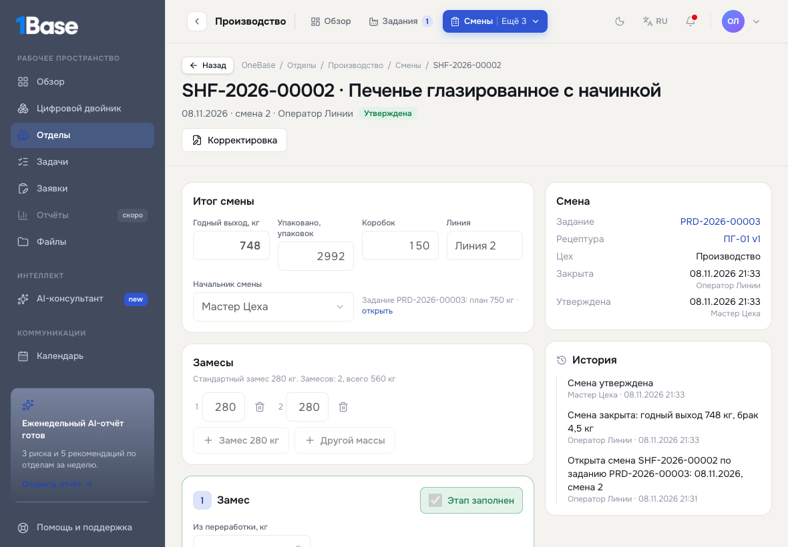

Внизу смены — расчёт по результатам: сколько сырья, начинки, глазури и упаковки положено на то, что сделала смена, с её фактическим браком.
Кто: мастер, кнопка «Закрыть задание». Фактический выход подставляется из утверждённых смен. Система сравнивает по каждой позиции: план, норму на факт, расход по результатам смен, факт склада (выдано − возвращено), взвешено и отклонение.
С чем сравнивается расход. Если есть утверждённые смены — с расходом по их результатам (фактические замесы и брак), без смен — с нормой на фактический выход. Перерасход больше порога (5 %) помечается красным, начальник производства и мастер получают уведомление.

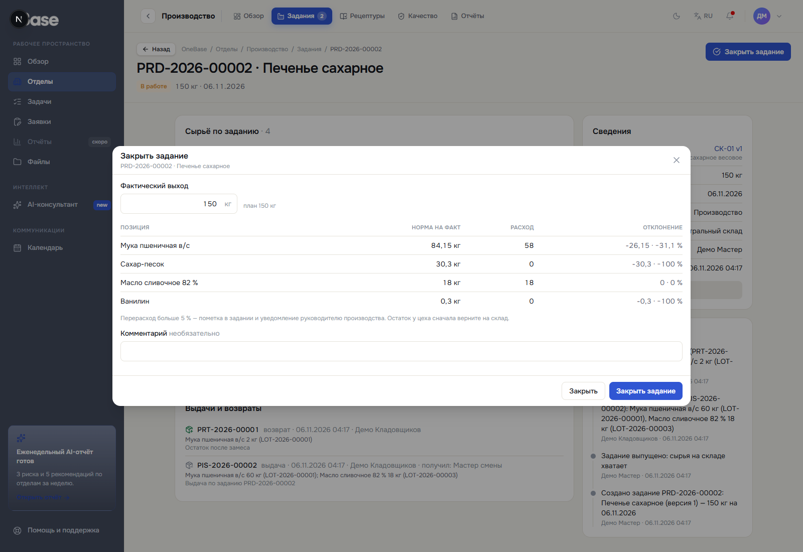
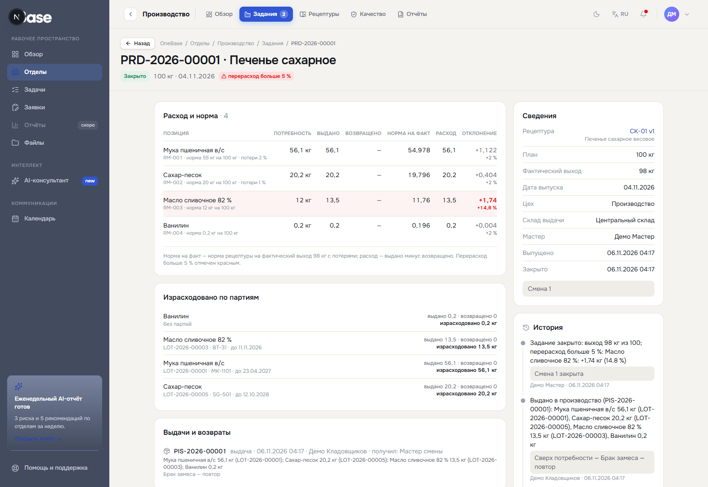
Брак вносят в смене по этапам и видам. Его стоимость считается по цене партий, выданных в задание (средняя цена выданного за вычетом возвращённого):
Брак на выпечке — это тесто: 2,5 ÷ 0,875 = 2,857 кг. В 280 кг замеса 150 кг муки, значит муки 2,857 × 150 ÷ 280 = 1,531 кг, и так далее:
| Сырьё | Кг в браке | Цена партии, сум/кг | Стоимость, сум |
|---|---|---|---|
| Мука | 1,531 | 6 100 | 9 336,73 |
| Сахар | 0,612 | 8 900 | 5 448,98 |
| Масло | 0,408 | 46 500 | 18 979,59 |
| Меланж | 0,306 | 21 500 | 6 581,63 |
| Итого | 2,857 | 40 346,94 |
Начинки, глазури, орехов и упаковки в этом браке нет — они добавляются после выпечки.
Стоимость брака видна в отчёте «Брак» (колонки «Стоимость брака, сум» и «Без цены партии») и на панели «Технолог». Она появляется, когда сырьё принимают партиями с ценой.
Если в техкарте указана позиция склада выхода (начинка, глазурь), после закрытия кладовщик нажимает «Оприходовать выход»: создаётся партия со сроком по сроку хранения позиции и с ценой партии — сырьё задания по цене выданных партий на единицу выхода (без труда и накладных). Дальше полуфабрикат выдают в другие задания, как сырьё, и по партии видно, в какие продукты она ушла. Второй раз выход по заданию не приходуется.
Сахар 150 кг × 9 000 + какао 100 кг × 38 000 = 1 350 000 + 3 800 000 = 5 150 000 сум. Выход 245 кг. Цена партии: 5 150 000 ÷ 245 = 21 020,41 сум за кг.
«Производство → Технолог» — панель за период по утверждённым сменам и закрытым заданиям: выпуск сегодня и за период, план и его выполнение, брак в кг, % и деньгах, расход к норме, выход после выпечки, график выпуска и брака по дням, разрезы по продуктам, сменам, этапам и видам брака, брак упаковки, отклонения расхода, что требует внимания (нехватка, перерасход, брак выше норматива, техкарты на утверждении).

«Производство → Отчёты» — предпросмотр, Excel и PDF:
| Отчёт | Что внутри |
|---|---|
| Производство | выпуск по продуктам, сменам и дням против плана |
| Брак | брак продукта и материалов по этапам и видам, норматив, доля, отклонение, переработка, стоимость |
| Расход: норма и факт | по заданиям и позициям: норма, по результатам смен, факт склада, отклонение |
| Упаковка | упаковки, коробки, брак упаковочных материалов |
| Полуфабрикаты | приход выхода, партии, куда выданы |
| Рецептуры | техкарты, версии, статусы |
| Партии и сроки, Контроль качества | остатки партий и сроки; проверки, решения, брак по поставщикам |
| Движения по партиям, Сверка позиций и партий | все движения партий; остаток позиции = сумма её партий |
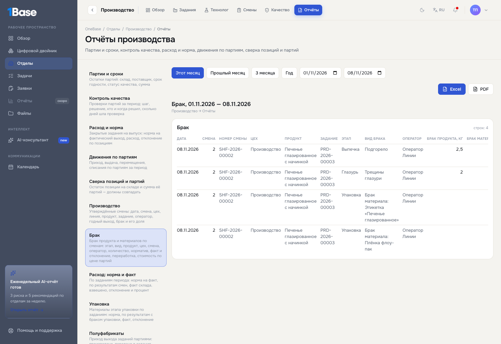
| № | Кто | Что делает | Что получилось |
|---|---|---|---|
| 1 | Снабженец | Заявка на сырьё «мука 10 000 кг × 6 200 и сахар 3 000 кг × 9 000» | PR-2026-00004, 89 000 000 сум |
| 2 | Аналитик, финансист | Согласовали по маршруту сырья | утверждена, «К закупке» |
| 3 | Снабженец | Тендер на муку 200 упак × 310 000, связан с заявкой | TN-2026-00001 |
| 4 | Снабженец | «Куплено» сахар 3 000 кг × 9 100, партия С-1104 | приход, резерв, «К выдаче» |
| 5 | Кладовщик | Принял 120 упак муки двумя партиями | 6 000 кг на контроле |
| 6 | Лаборатория | Документы, показатели, проба → «Допустить» | партии годны к выдаче |
| 7 | Технолог | Техкарта печенья, утверждена вторым технологом | действующая версия |
| 8 | Мастер | Задание на выпуск, «Выпустить» | потребность зафиксирована |
| 9 | Кладовщик | Выдал сырьё по заданию — партии с ближайшим сроком | сырьё у цеха |
| 10 | Оператор, мастер | Смены: замесы, выпечка, брак, упаковка; утверждение | расчёт по результатам |
| 11 | Кладовщик | Принял остаток сырья назад | перерасхода нет |
| 12 | Мастер | Закрыл задание | сверка нормы, перерасход — уведомление |
| 13 | Все | Панель, обзоры, отчёты | выпуск, брак в деньгах, экономия закупок |
| Событие | Кому |
|---|---|
| Заявка отправлена, ждёт решения | тому, чей шаг: руководителю, аналитику, финансисту, директору |
| Согласована, отклонена, возвращена | автору и снабжению |
| Некому согласовать шаг | тем, кто настраивает снабжение |
| Куплено, товар поступил | автору («можно получить»), кладовщикам («к выдаче») |
| Купили дороже согласованного | финансисту |
| Остаток ниже минимума | снабжению и кладовщикам |
| Партия на контроле, дошла до решения, допущена или забракована | лаборатории, назначенным, кладовщикам, руководителю снабжения |
| Истекает срок партии, партия просрочена | кладовщикам и руководителю снабжения |
| Задание выпущено, а годного сырья не хватает | мастеру и снабжению |
| Перерасход при закрытии задания | начальнику производства и мастеру |
| Ежедневная сводка, эскалация задач | директору и руководителю снабжения |
Напоминания уходят один раз; если дату поставки перенесли или остаток вернулся к минимуму, отметка снимается.
Её шаг некому решить: в отделе нет руководителя, не выбран финансист или директор, нет аналитиков, кроме автора. В карточке у шага подсказка, где это исправить; тем, кто настраивает снабжение, пришло уведомление.
Сырьё закупается только заявкой «Закупка сырья» со своим маршрутом. Её создают снабженцы, аналитики и финансист — остальным нужно обратиться в снабжение.
Она на контроле качества, забракована, заблокирована или просрочена. Причина видна в «Партиях» и в карточке позиции.
Часть зарезервирована под заявки или лежит на контроле, забракована, просрочена.
Поставка по тендеру, «Куплено», выдача и возврат по заданию, пробы и возврат поставщику уже учтены в тендере, заявке, задании или проверке. Исправление — встречным документом.
У цеха на руках сырьё по заданию — сначала оформите возврат.
Часть материалов выдана без цены партии: позиция ведётся без партий или партия без цены. Такие материалы названы в отчёте.
| Слово | Значение |
|---|---|
| Резерв | товар на складе, отложенный под заявку; другим не выдаётся |
| Доступно | на складе − резерв − на контроле, забраковано, просрочено |
| Партия (LOT-) | одна поставка позиции со своим сроком годности, ценой и остатком |
| FEFO | сначала выдаётся партия, у которой раньше истекает срок |
| На контроле | партия ждёт решения по качеству и не выдаётся |
| Единица закупки | как товар приходит («1 упак = 50 кг»); на складе учитывается в единице карточки |
| Сторно | отмена документа встречными движениями; исходный документ остаётся |
| Лимит | сумма покупки без директора, по умолчанию 5 000 000 сум |
| Допуск | на сколько процентов может вырасти цена после утверждения без повторного согласования |
| Техкарта | версия рецептуры с этапами, нормами, браком и упаковкой |
| Замес | одна порция теста по рецептуре замеса, например 280 кг |
| Норма на факт | сколько сырья положено на фактический выход по техкарте |
| По результатам смен | сколько положено на фактические замесы и фактический брак |
| Перерасход | расход больше основы сравнения сверх порога (5 %) |